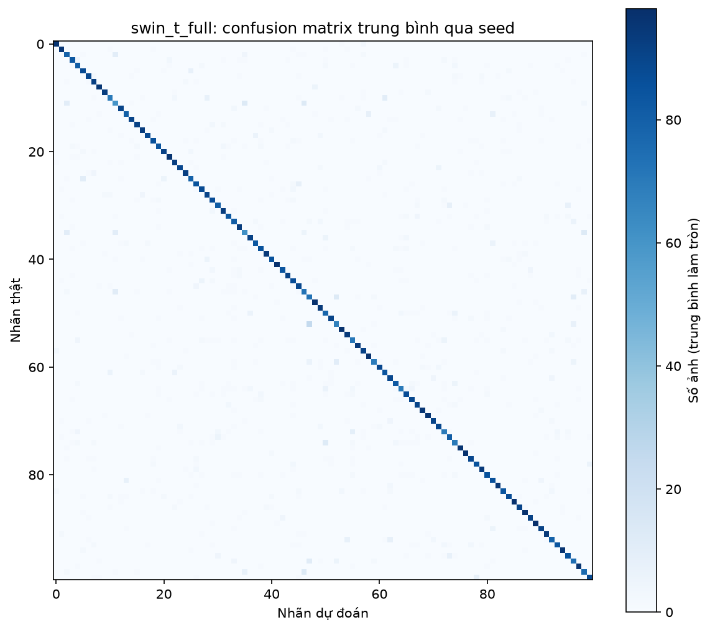

CIFAR-100
image classification
The study evaluates pretrained ResNet18 and Swin-T under head-only, partial and full fine-tuning, with analysis of learning curves, classification errors and data overlap.
Project overview
This study compares three ways to transfer ImageNet features to CIFAR-100 with ResNet18 and Swin-T. It measures accuracy, macro-F1, training time and peak GPU memory.
Dataset
CIFAR-100 · 60,000 RGB images · 100 fine classes
After exact RGB deduplication, 44,976 training, 5,000 validation and 9,998 test images remain. The original 32×32 images are resized to 96×96.
Dataset requirements
- At least 5,000 images in total and at least 3 classes for classification.
- A short edge of 128 px or more is recommended. Smaller images require justification and an explanation of resizing or padding.
- MNIST, Fashion-MNIST and CIFAR-10 are not accepted as the main dataset. They may only illustrate the pipeline.
- Pretrained models are mandatory if using deep learning. A frozen feature extractor with a shallow classifier or light fine-tuning of the final layers is acceptable.
- Document train, validation and test splits; avoid data leakage. Explain the purpose of appropriate augmentation.
- Extended tasks such as detection or segmentation require suitable annotations, labeling documentation and dataset structure.
- Handcrafted OpenCV features are optional and may be compared with pretrained representations.
Source: course assignment brief v4.0, section 4.4. The 128 px threshold is a recommendation; pretrained models are required only when using deep learning.
Training and data preparation
Images are stratified by class. Each exact RGB image is kept in at most one partition, with priority given to test, then validation, then training. The procedure removes 24 training images and two duplicate test images. It checks exact pixels.
Training applies random crops and horizontal flips before resizing. A 96×96 input limits compute on a dataset whose native size is 32×32, below the recommended 128 pixels. Resizing leaves the original level of detail unchanged.
For each pretrained backbone, the notebook trains the classifier alone, fine-tunes the final stage, and fine-tunes the full model. Each of the six settings uses three seeds and 20 epochs. Validation accuracy selects the checkpoint for test evaluation.
Pretrained model results
| Model and setting | Accuracy | Macro-F1 |
|---|---|---|
| ResNet18 · classifier only | 60.91 ± 0.14% | 0.6077 |
| ResNet18 · final stage | 73.84 ± 0.23% | 0.7382 |
| ResNet18 · full fine-tuning | 79.16 ± 0.39% | 0.7915 |
| Swin-T · classifier only | 71.69 ± 0.07% | 0.7156 |
| Swin-T · final stage | 78.44 ± 0.16% | 0.7837 |
| Swin-T · full fine-tuning | 86.81 ± 0.02% | 0.8681 |
Fine-tuning the final stage improves both backbones over training only the classifier. Full fine-tuning gives Swin-T 86.81% accuracy, 7.66 percentage points above ResNet18 in the same setting. It also takes longer and uses more GPU memory.


Project deliverables
Run all executes data inspection, fine-tuning, evaluation and plots in the same notebook.
Data distributions, six pretrained settings, learning curves and confusion matrices.
Methods, evaluation, findings and limitations.
CTG
CO5177 coursework